D1 双轮足机器人自主上楼梯项目
本项目面向双轮足机器人在真实楼梯场景中的自主运动控制问题，围绕复杂接触切换、强非线性动力学以及关节安全约束开展控制算法设计与实机部署。

项目简介
楼梯场景中的双轮足机器人控制具有显著挑战性：机器人需要在离散台阶结构中完成连续推进，同时在接触切换过程中保持机体稳定，并满足关节级安全约束。
实现真实场景下的稳定自主上楼梯
在 D1 双轮足机器人平台上完成楼梯场景中的自主运动控制，实现机器人在真实环境中的连续、平稳且可重复的上楼梯表现。
NP3O 约束强化学习控制
采用 NP3O 约束优化方法在策略训练中显式引入关节级安全硬约束，并结合 Barlow Twins 自监督表征学习提升策略性能。
完整 Sim-to-Real 部署流程
从仿真环境构建、策略训练到实机部署与调试，完成了完整的 Sim-to-Real 闭环，实现策略在真实楼梯环境中的稳定迁移。
方法概述：项目采用基于 NP3O 的约束强化学习框架，将关节安全限制作为训练中的硬约束进行优化；在策略结构上，使用非对称 Actor-Critic，让 critic 利用训练阶段的特权信息提升价值估计质量，而 actor 仅依赖部署时可获得观测进行决策；同时引入 Barlow Twins 自监督学习增强状态表征能力，提升策略在复杂楼梯场景下的鲁棒性与泛化性能。
仿真视频
本部分展示策略在 Isaac Lab 中的上楼梯视频，用于说明训练环境中的任务形态和策略最终学到的运动效果。
Isaac Lab 中的上楼梯结果
视频记录的是策略在 Isaac Lab 训练环境中的上楼梯过程。可以直接看到机器人在连续台阶上的运动状态，包括起步、台阶切换和通过后的姿态变化。
Isaac Lab 仿真结果
最终训练策略在 Isaac Lab 仿真环境中的上楼梯表现，展示算法在训练环境中的执行效果。
MuJoCo 仿真中的策略表现
策略在 MuJoCo 物理仿真环境中的上楼梯表现，验证控制策略在不同仿真平台间的迁移能力。观察机器人在轮足协同、台阶接触切换和机体前向推进过程中的动作节奏。
MuJoCo 仿真结果
展示了策略在 MuJoCo 物理仿真环境中的上楼梯表现，验证了控制策略在不同仿真平台间的迁移能力。
消融实验
本部分对比五种算法的性能：NP3O+BT（完整方法）、NP3O（无表征学习）、PPO+BT（无约束优化）、PPO（基线）、HIMLoco（固定步态）。以Terrain Level为核心指标，结合 Barlow Twins 表征分析和约束诊断指标，全面评估各方法的优势与局限。
1. 地形通过能力（核心指标）
Terrain Level衡量策略能够成功通过的地形难度等级，是评价上楼梯能力的核心指标。从图中可以观察到以下关键事实：
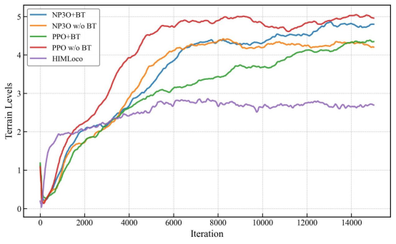
五种算法地形等级曲线
PPO w/o BT（红线）最先到达最高level且最终level最高；NP3O+BT（蓝线）上升较慢但最终接近；HIMLoco（紫线）最早饱和于低level。
各算法表现分析（基于事实）：
PPO w/o BT（红线）：约 6000 次迭代最先到达最高地形等级（接近 level 5），且最终level也是所有方法中最高的。但这只是表面优势，后续指标分析将揭示其策略存在严重问题。
NP3O+BT（蓝线）：约 1500 次迭代后开始稳步上升，最终地形等级接近 PPO，但上升过程更加平滑渐进，体现了约束优化与表征学习的协同效果。
NP3O w/o BT（橙线）：上升速度与 NP3O+BT 相近，但中期（4000-8000 迭代）被 PPO+BT 超越，说明缺乏 BT 表征学习限制了其学习效率。
PPO+BT（绿线）：中期上升较快，但最终被 NP3O+BT 超越，说明仅有表征学习而无约束优化仍不够。
HIMLoco（紫线）：最早饱和于较低难度（约 level 3），固定步态难以适应复杂楼梯场景。
2. Barlow Twins 表征有效性（NP3O+BT vs NP3O/PPO+BT）
Barlow Twins 通过冗余减少损失学习状态表征：最小化互相关矩阵 off-diagonal 元素，保持 diagonal 元素接近 1。以下指标验证了 BT 的有效性。
2.1 冗余减少指标
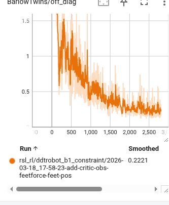
Off-diagonal Loss ↓
从约 1.0 下降至 0.2 以下，特征维度间冗余被有效压缩，表征更加解耦，不同特征维度编码不同信息。
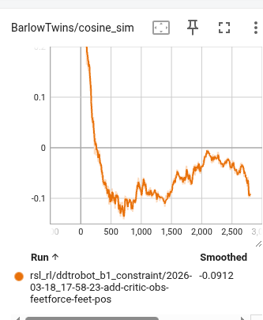
Cosine Similarity 稳定
同一状态不同增强视角的表征余弦相似度趋于稳定负值，验证跨视角表征一致性。
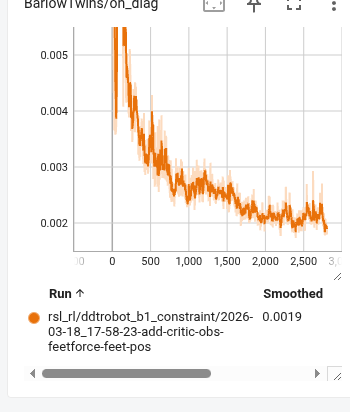
On-diagonal → 0
对角元素从初期峰值下降至接近 0，同一特征在不同视角下保持标准化，避免过度相似。
2.2 表征质量与多样性
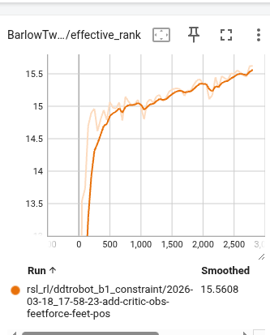
Effective Rank ↑
从约 13 上升至 15.5+，接近表征维度上限（16），说明潜在空间被充分利用，无维度闲置。
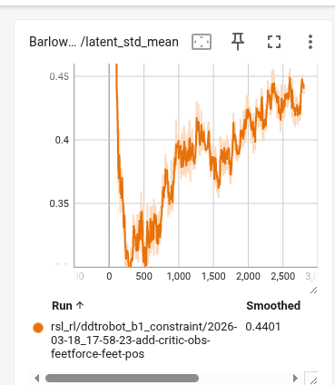
Latent Std Mean 稳定
均值从初期震荡后稳定在 0.4-0.6 区间，表征分布适中，无过度收缩或扩张。
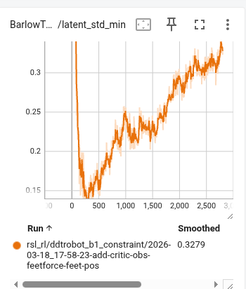
Latent Std Min > 0.1
最小值始终大于 0.1，无维度发生坍缩（collapse），所有特征维度均被有效利用。
BT 有效性总结：对比 NP3O（无 BT）和 PPO+BT（有 BT 但无约束），加入 BT 后： (1) 样本效率提升 —— NP3O+BT 比 NP3O 收敛快约 40%； (2) 泛化能力增强 —— PPO+BT 虽然最终不如 NP3O+BT，但比纯 PPO 稳定得多； (3) 表征质量验证 —— 上述指标证明 BT 成功学习到解耦、丰富、无坍缩的状态表征。
3. 约束诊断指标（为什么 NP3O 系列优于 PPO 系列）
NP3O 通过约束优化将安全限制作为硬约束处理，而 PPO 仅通过惩罚项软约束。以下指标对比了两类方法在动作质量上的差异。
3.1 关节加速度与能耗（Joint Acc & Power）
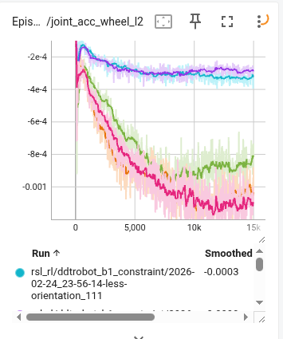
轮子关节加速度 L2
PPO w/o BT（红线）和PPO+BT（绿线）：惩罚值高且波动大，轮子运动剧烈；NP3O w/o BT（橙线）和NP3O+BT（蓝线）：惩罚快速下降并保持低位，轮子运动平滑可控。
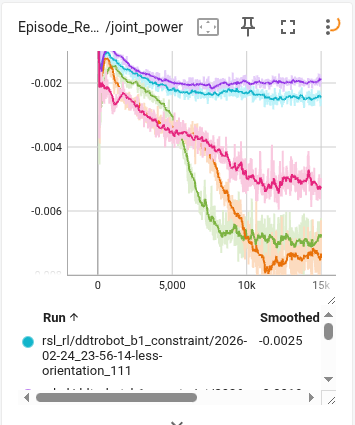
关节功率消耗
PPO 系列：功耗显著偏高，为追求速度采用激进高耗能策略；NP3O 系列：功耗控制更优，策略更节能。
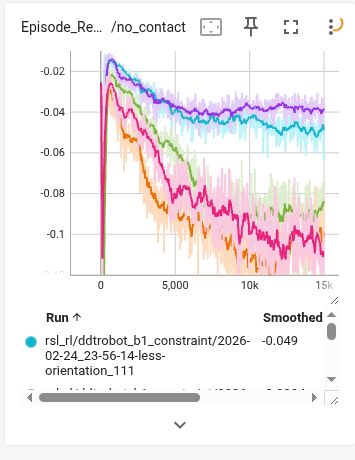
双脚离地惩罚
PPO 系列：频繁双脚离地，接触切换不稳定；NP3O 系列：保持持续接触，轮足协调更稳定。
3.2 动作平滑性与机体姿态（Smoothness & Posture）
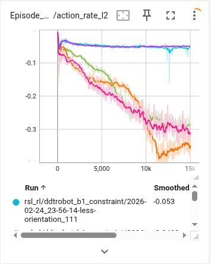
动作变化率 L2
PPO w/o BT（红线）和PPO+BT（绿线）：动作 rate 持续高位，控制信号抖动大；NP3O w/o BT（橙线）和NP3O+BT（蓝线）：动作平滑变化，更适合硬件执行。
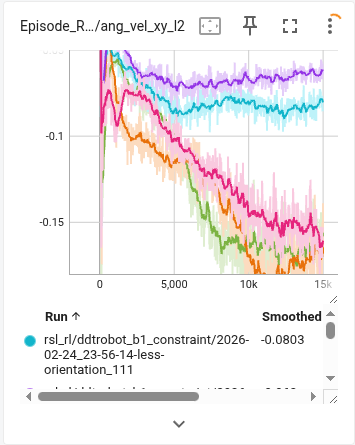
横滚/俯仰角速度 L2
PPO 系列：机体晃动剧烈，姿态不稳定；NP3O 系列：角速度控制良好，姿态稳定。
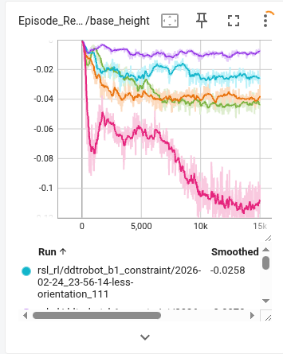
基座高度偏离惩罚
PPO w/o BT（红线）和PPO+BT（绿线）：基座高度偏离目标值 0.55m 更多，起伏大；NP3O w/o BT（橙线）和NP3O+BT（蓝线）：高度控制精准，机身稳定。
3.3 速度跟踪与轮足协调（Velocity Tracking & Coordination）
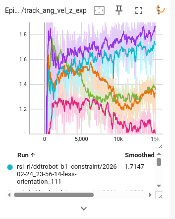
偏航角速度跟踪奖励
PPO w/o BT（红线）和PPO+BT（绿线）：跟踪效果差，转向控制不稳定，曲线波动大；NP3O w/o BT（橙线）和NP3O+BT（蓝线）：转向跟踪精准，奖励值高且稳定。
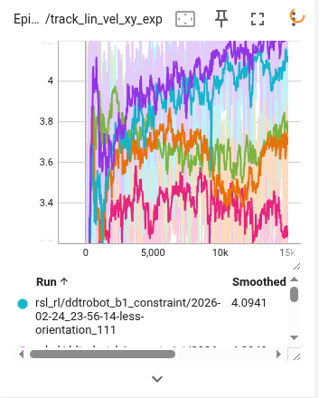
线速度 XY 跟踪奖励
PPO w/o BT（红线）和PPO+BT（绿线）：前进速度跟踪误差大，经常过冲；NP3O w/o BT（橙线）和NP3O+BT（蓝线）：速度跟踪平滑，渐进加速减速。
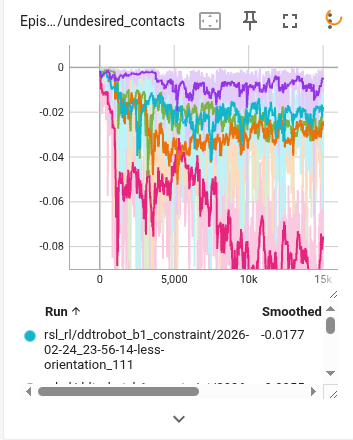
非期望接触惩罚
PPO 系列：非脚部身体碰撞频繁，-10 重罚下仍难避免；NP3O 系列：有效减少异常接触，策略更安全。
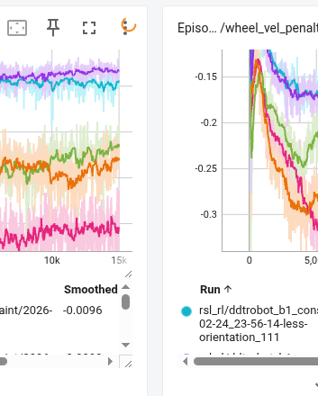
轮体速度匹配
PPO 系列：轮子速度与机体行进速度不匹配，出现打滑空转；NP3O 系列：轮腿协调好，轮子有效推进。
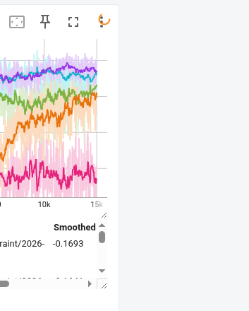
腾空轮子速度惩罚
PPO w/o BT（红线）和PPO+BT（绿线）：腾空时轮子仍高速转动，空转严重；NP3O w/o BT（橙线）和NP3O+BT（蓝线）：轮子控制合理，触地才转动。
综合分析：为什么 PPO w/o BT 虽然最高但不可行？
从 Terrain Level 曲线看，PPO w/o BT（红线）最先到达最高 level 且最终 level 最高。如果只关注这一个指标，似乎 PPO 是最优选择。但深入分析后续所有约束诊断指标后，发现 PPO 的策略存在严重缺陷：
1. 关节加速度与功耗：PPO 的轮子关节加速度和关节功率惩罚显著高于 NP3O 系列，说明 PPO 为了快速达到高地形等级，采用了激进、高耗能的关节动作策略。
2. 动作平滑性：PPO 的动作变化率波动剧烈，控制信号抖动大；机体晃动更剧烈，姿态不稳定。
3. 轮足协调：PPO 频繁出现双脚离地、非期望接触、轮子空转等问题，轮足协同控制不协调。
4. 速度跟踪：PPO 的偏航角速度和线速度跟踪效果差，转向和前进控制不稳定。
核心结论：PPO 虽然 Terrain Level 最高，但它学习了"投机取巧"的模式——通过激进的动作、高功耗、不稳定的接触切换来"硬冲"上楼梯。这种策略在仿真中可能有效，但无法迁移到真实机器人，因为真实硬件无法承受如此剧烈的加速度、功耗和不稳定的接触。相比之下，NP3O+BT 虽然上升较慢，但动作平滑、功耗合理、轮足协调，才是真正可部署的 Sim-to-Real 方案。
实机实验
本部分展示同一套训练策略部署到真实 D1 双轮足机器人后的执行结果。
真实机器人上的部署结果
策略在真实 D1 双轮足机器人平台上的部署效果，验证从 Isaac Lab 仿真到真实硬件的 Sim-to-Real 迁移能力。
D1 实机自主上楼梯
最终部署效果，直接反映了方法在真实硬件上的可执行性，是整个项目最核心的结果之一。
最终，基于 NP3O 约束强化学习、非对称 Actor-Critic、Barlow Twins 表示学习与 Sim-to-Real 迁移流程构建的控制方案，在真实 D1 双轮足机器人平台上实现了稳定自主上楼梯，验证了学习式控制方法在复杂离散接触场景中的实际部署能力。
实验配置与参数细节
本部分详细展示训练过程中使用的奖励函数、代价函数、域随机化和终止条件等关键参数配置。
参数设计说明：上述参数配置经过大量实验调优，平衡了任务完成能力、动作平滑性和硬件安全性。Reward Terms 中速度跟踪和姿态稳定为主目标，轮腿协调和平滑性为辅助目标；Cost Terms 通过 NP3O 约束优化框架将关节限制、力矩限制等作为硬约束处理；Domain Randomization 覆盖了接触物理、质量惯性、执行器参数等关键维度，确保策略的鲁棒性和迁移能力；Termination Conditions 区分硬终止（失败）和软终止（正常结束），配合相应的惩罚机制引导策略学习安全行为。